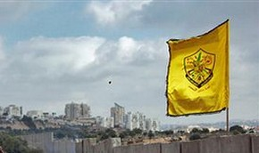

ФАТХ.
Движение национального освобождения Палестины (HARAKAT AL-TAHRIR AL-WATANI AL-FILASTINI). Другие названия: ФАТХ, AL-FATAH, AL-FAT`H, FATAH, Forсe 17, Чёрный сентябрь, Хавари группа специальных операций, BSO, Аль-асифа, Шторм, Фатах группа специальных операций, Мученики TAL AL ZA'ATAR, AMN ARAISSI.
Военно-полититческая организация палестинских арабов, основанная в Кувейте в 1957 г. Ясиром Арафатом и Абу Джихадом (Khalil al-Wazir) с целью освобождения Палестины от Израильской оккупации, уничтожения государства Израиль, изгнания с территории Палестины всех вновь прибывших евреев. Будущее Палестинское государство рассматривалось как независимое и светсткое; первоначально стремились к освобождению Палестины полностью, в 1990-е приняли план, по которому арабское государство должно включать Сектор Газы и Западный берег реки Иордан.
С 1964 года начинает осуществлять вооружённые рейды на территорию Израиля: 31.12.1964 была осуществлена первая боевая операция ФАТХ - взорвана Израильская водокачка. После Шестидневной войны 1967 года ФАТХ расширила свои ряды и к 1968 году стала основной и наиболее многочисленной силой Палестинского Движения Сопротивления (ПДС). Метод борьбы до перехода к мирным переговорам: диверсии, партизанская война. Проводили операци в Европе, Тунисе, Ираке, Ливане, Алжире, Йемене и др. станах. В ходе гражданской войны на территории Иордании 16-27.9.1969, Иорданская армия разбила силы ФАТХ; конфликт закончился уничтожением большого числа палестинских партизан и изгнанием основных сил ФАТХ и других боевых подразделений ООП из Иордании. Отряды ФАТХ перебрались в Ливан, который на десятилетие становится основной базой ООП.
ФАТХ в структуре организации имела или имеет различные боевые подразделения: "Force 17", "Хавари - группа специальных операций" и др. Непосредственно после событий 1969 года создаётся осуществлявшая акции международного терроризма организация - "Чёрный сентябрь", который несёт ответственность за убийство израильских спортсменов на Олимпиаде в Мюнхене и другие не менее кровавые операции против граждан Израиля, Иордании и других государств. Стратегия использования международного терроризма была пересмотрена ФАТХ после войны 1973 года. С этого момента Арафат всё более склоняется к политическим методам решения палестинской проблемы. Но такие группы ФАТХ , как "Force 17" и "Хавари" неоднократно нарушали политику Арафата.
В 1982 году, в результате израильского вторжения в Ливан, силы ООП и ФАТХ были в значительной степени разгромлены. Штаб-квартира движения была перенесена в Тунис. В октябре 1985 авиация Израиля предпринимает налёт на штаб-квартиру ООП и ФАТХ в Тунисе, что приводит к очередному вынужденному рассредоточению сил организации. В 1990-е гг. основой политики Арафата стал курс на мирное урегулирование конфликта. Арафат признал государство Израиль, в ближайшей перспективе находится провозглашение суверенитета государства арабов Палестины.
Значительные контингенты ФАТХ оказались в Йемене, Судане, Ираке, Алжире. Силы организации достигают 6000 - 8000 активных членов.
В период активной антиизраильской борьбы ФАТХ получала военную, финансовую, тыловую помощь из Кувейта, Саудовской Аравии и от других арабских государств; СССР, КНДР, Китай и ряд восточно-европейских стран осуществляли поставки вооружения и обучение боевиков; СССР оказывал широкомасштабную политическую поддержку организациям ПДС.
ООП имеет собственные бизнесс-структуры, доходы которых оцениваются в сотни миллионов долларов.
Хронология боевых операций:
март 1971: пятёркой боевиков уничтожены нефтяные резервуары в Роттердаме
июль 1971: атака на офис Иорданской авиакампании ALIA в Риме, нападение на самолёт этой же кампании в Каире
август 1971: захвачен самолёт ALIA рейса на Алжир
сентябрь 1971: нападение на самолёт ALIA рейса Бейрут-Каир
ноябрь 1971: убийство премьер-министра Иордании Васфи эль-Тала в Каире
декабрь 1971: покушение на посла Иордании в Лондоне
март 1972: нападение на Лондонскую резиденцию короля Иордании Хусейна
сентябрь 1972, Мюнхен: группой в восемь террористов захвачены и убиты одиннадцать израильских спортсменов
сентябрь 1972: серия диверсий против посольств и консульств Израиля в Амстердаме, Париже, Женеве, Монреале, Вене, Оттаве, Брюсселе, Киншасе, Буэнос-Айресе, Вашингтоне
ноябрь 1972: убит Сирийский журналист во Франции
декабрь 1972: захват посольства Израиля в Бангкоке
январь 1973: атака Израильского аганства в Париже
март 1973: захват заложников в посольстве Саудовской Аравии в Хартуме. Убиты трое дипломатов западных стран (США и Бельгия)
сентябрь 1973: ракетная атака на самолёт ТИВ Эль-АЛ в Риме
сентябрь 1975: захват шести заложников в посольстве Египта в Мадриде. Заложники были переправлены в Алжир, где освобождены
июль 1978: убит посол Ирака в Британии
апрель 1985: попытка захвата корабля. В ходе антитеррористической операции 20 боевиков убиты и 8 арестованы
сентябрь 1985: боевиками "Вооружённого отряда 17" на Кипре захвачено туристическое судно. Убийство трёх израильтян стало причиной налёта авиации Израиля на штаб-квартиру ООП в Тунисе
февраль 1986: "Вооружённый отряд 17" осуществил взрыв автобуса в Израиле. Ранено 6 человек
март 1988: "Вооружённым отрядом 17" в Израиле захвачен автобус с заложниками. Трое пассажиров были убиты
октябрь 1990: ВО-17 предпринял попытку убийства трёх израильтян.
- использованы материалы сайта терроризм и контртерроризм

ФАТХ отметил 45-й День рождения
02.01.10 MIGnews.com
Первого января палестинское движение ФАТХ празднует 45-ю годовщину своего образования. Но сегодня это движение сильно отличается от той военно-политической организации, которую в конце 50-х годов в Кувейте основал Ясир Арафат.
Арабское слово "фатх" означает "победу". Своей целью движение провозгласило "освобождение всех палестинских территорий от всего, что связано с сионизмом". 1 января 1965 ФАТХ начал вооруженную борьбу против израильского государства.
После Шестидневной войны 1967 года ФАТХ значительно расширил свои ряды. Оккупация израильтянами сектора Газа и Западного берега Иордана привела к укреплению роли палестинских партизан.
Добровольцы из лагерей беженцев начали проходить военную подгтовку в учебных лагерях ФАТХ. Нападения на Израиль участились. К 1970 году именно ФАТХ стал основной и наиболее многочисленной силой палестинского движения сопротивления.
В 1972 году во время Олимпиады в Мюнхене члены группы "Черный Сентябрь", входившей в состав ФАТХа, убили 11 израильских спортсменов.
Вскоре ФАТХ и ООП пересмотрели стратегию использования международного терроризма и сосредоточились на достижении международного признания борьбы палестинцев.
В 1982 году в результате израильского вторжения в Ливан силы ООП и ФАТХа были в значительной степени разгромлены. Штаб-квартира движения была перенесена в Тунис. Все это привело к очередному вынужденному рассредоточению сил организации.
В 90-е годы Ясир Арафат взял курс на мирное урегулирование конфликта. В 1993 году в Вашингтоне была подписана совместная палестино-израильская Декларация о принципах. Она предусматривала введение местного самоуправления в секторе Газа и на Западном берегу Иордана.
На выборах в январе 1996 года Ясир Арафат был избран главой Палестинской автономии, а ФАТХ получил большинство в Палестинском законодательном совете первого созыва.
В сентябре 2000 года началась вторая палестинская интифада. После смерти Арафата, Хамас становится серьезным противником ФАТХа.
На выборах в Палестинский законодательный совет второго созыва в январе 2006 года ФАТХ проиграл по числу набранных голосов движению Хамас. Но под контролем ФАТХа остались структуры, подчинённые президенту автономии Аббасу.
В августе 2009 года в Бейт-Лехеме состоялся 6-й съезд ФАТХа . Глава Палестинской национальной администрации Махмуд Аббас, являющийся сторонником продолжения переговорного процесса с израильтянами, сохранил за собой пост руководителя палестинского движения ФАТХ. Никто из делегатов съезда не рискнул оспаривать его титул национального вождя.
21.10.09 MIGnews.com
Глава израильского МИДа заявил, что продолжение процессов, в духе резолюции Совета по правам человека в Женеве, ставят под угрозу палестино-израильские мирные переговоры. Он также подчеркнул, что враждебная по отношению к государству Израиль деятельность палестинской администрации, вкупе с решениями августовской конференции ФАТХа вызывают серьезные сомнения по поводу реальных целей, которые преследуют палестинцы: создание палестинского государства, или уничтожение Израиля.
Например, в 19-ый параграф резолюции вышеуказанной конференции гласит: "Вооруженная борьба есть стратегия, а не тактика. Вооруженное восстание арабского народа Палестины является одним из решающих факторов в борьбе за освобождение и уничтожение сионистского присутствия. Эта борьба не прекращается до полной ликвидации сионистского образования и освобождения Палестины".